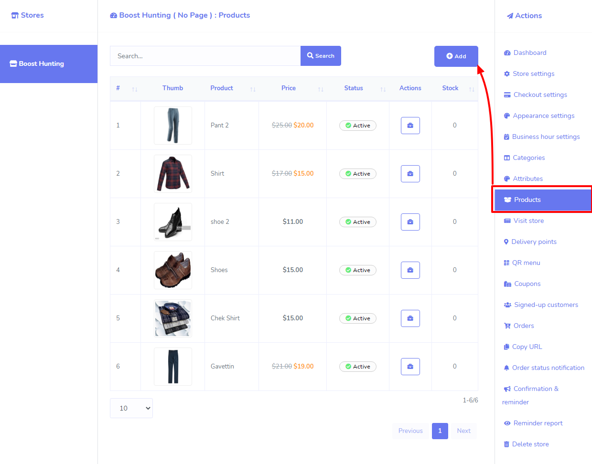
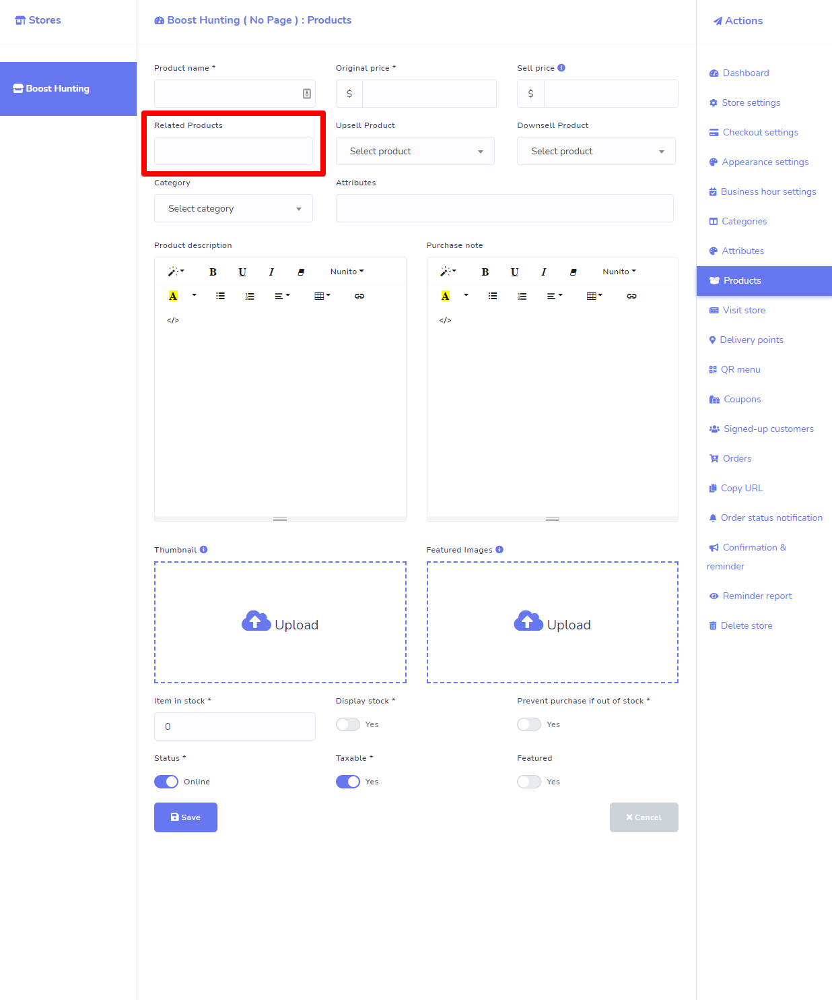
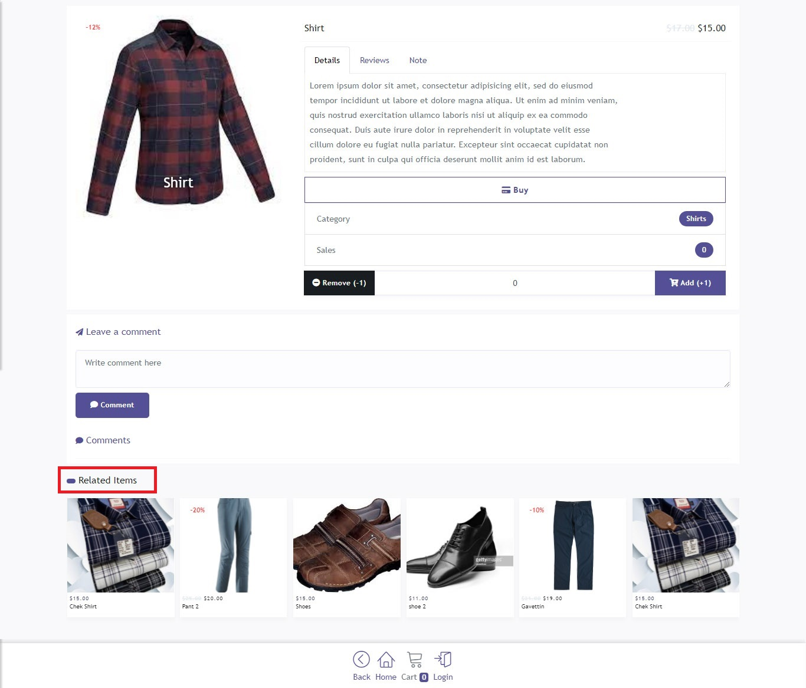
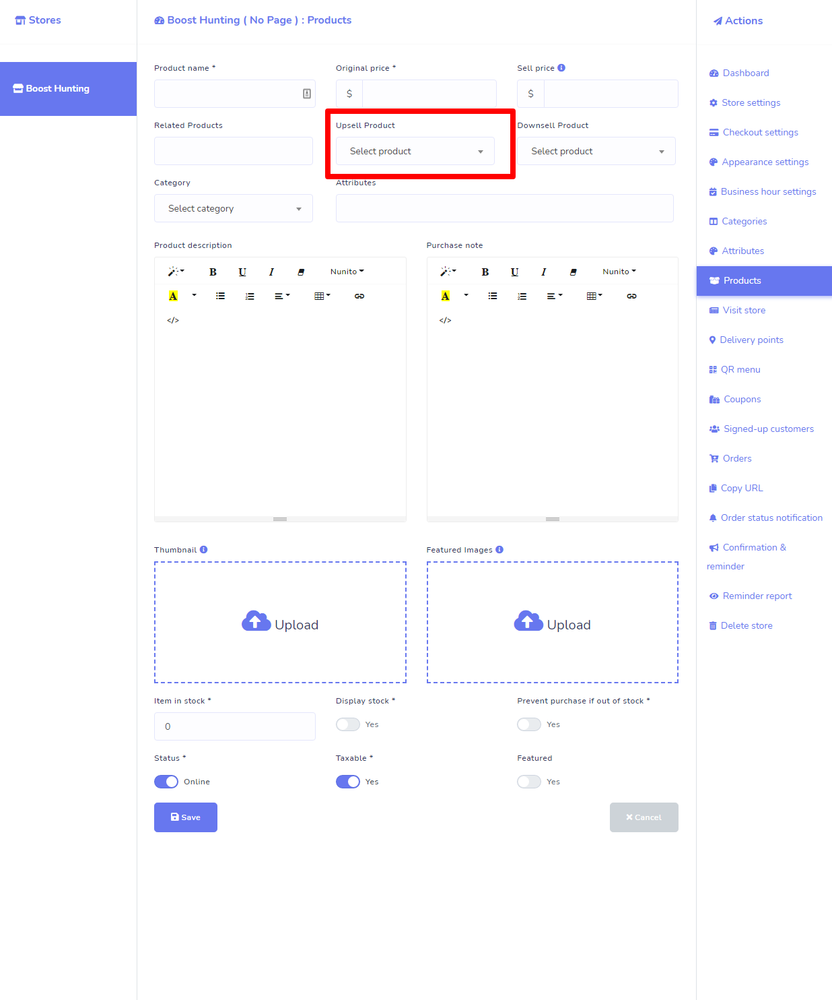
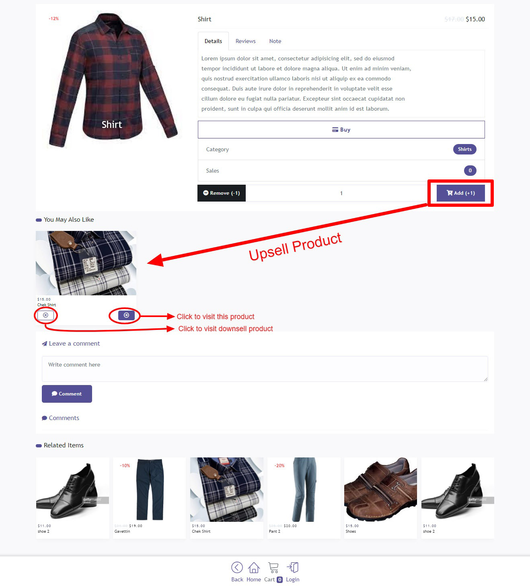
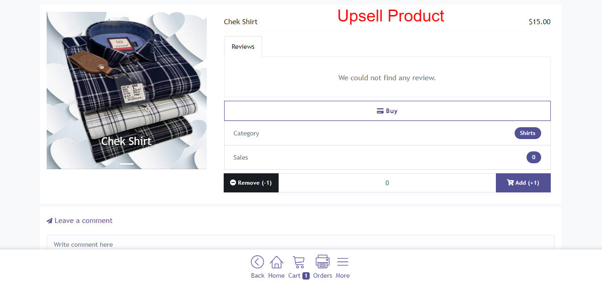
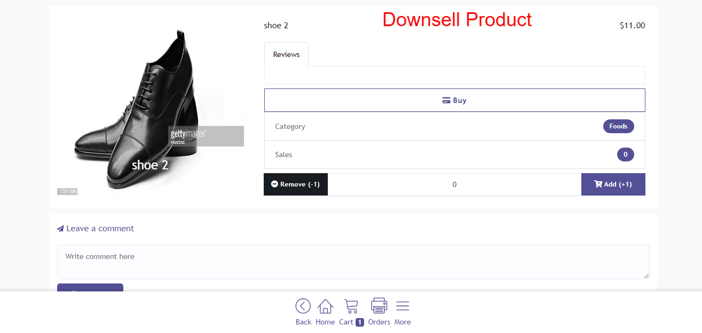
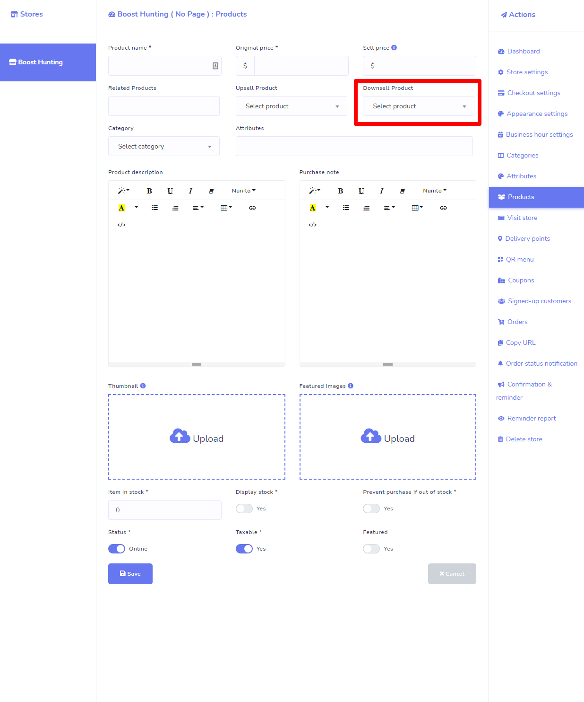
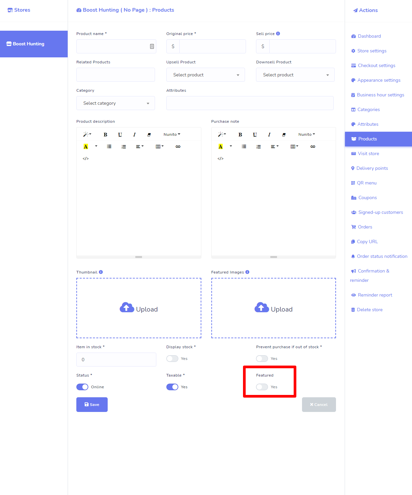
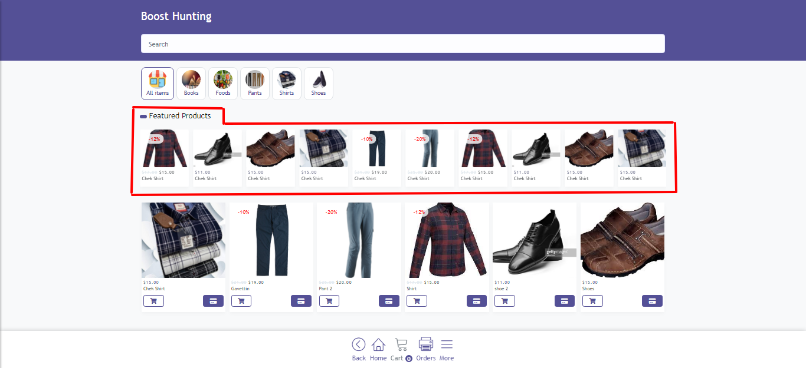

Cross-selling is the process of suggesting related or complementary products to the item the customer is already buying. Cross-selling is an effective way of increasing both order value and customer lifetime value and it's a sales technique used to get a customer to spend more by purchasing a product that's related to what's being bought already.
Examples of Cross-selling:
Please Visit your ecommerce store and click on the Products menu from the right-sided sidebar. Now click on the Add buttons from the section (See the image please) to add cross-sell products for the product. Or you can also update an existing Product to add cross-sell products to that product.

In the product creation/Update form, there is a field for Cross-sell product (see image), select products and hit Save button.

How will it look in the Store

Upselling is the process of encouraging a customer to buy a more expensive item, or purchase an upgrade or add-on to the product they are already buying. Upselling is an effective way of increasing order value.
Example:
Your wholesale business sells medical supplies. A customer visits your online eCommerce store and clicks on the Wheelchairs product category menu. He/she selects the Economy Wheelchair and, once on the product page, clicks “Add to cart”. This is now an excellent opportunity to upsell this customer by recommending a Standard Wheelchair as a suggested product.
Please Visit your ecommerce store and click on the Products menu from the right-sided sidebar. Now click on the Add buttons from the section (See the image please) to add upsell product for the product. Or you can also update an existing Product to add upsell product to that product.
In the product creation/Update form, there is a field for Cross-sell product (see image), select products and hit Save button.

How will it work and look in the Store
Suppose, customer visits to a Product, when the customer click on Add (+1) button from the single product page, then the corresponding upsell product will be shown below of the product (see image).

Click on the Continue button of the upsell product to visit the product. If you click on the Cancel button of the upsell product, system will redirect to the corresponding downsell product page if the visited product has any downsell product.


Down-selling is the opposite of up-selling. It can be effectively used when a buyer has declined your product or service offer (sometimes by simply clicking the close button on the web page) and you offer them an alternative product that has minimum features at a lower price. This approach will give you a better chance to be accepted, and selling something is always better than nothing.
Example:
Using the wholesale medical supplies business scenario again, a new customer visits the N95 Respirator Mask product page in your online store, but doesn’t click “Add to cart”. An effective product recommendation downsell strategy here would be to suggest a medical mask as an alternative.
Please Visit your ecommerce store and click on the Products menu from the right-sided sidebar. Now click on the Add buttons from the section to add downsell product for the product. Or you can also update an existing Product to add downsell product to that product.
In the product creation/Update form, there is a field for downsell product (see image), select products and hit Save button.

How will it work and look in the Store
Suppose, customer visits to a Product, when the customer click on Add (+1) button from the single product page, then the corresponding downsell product will be shown below of the product (see image).
If customer click on the Cancel button of the upsell product, system will redirect to the corresponding downsell product page if the visited product has any downsell product.
You can also make your product as featured product during product creation or update a product. Please go to the product add or update form and there is a toggle option for making the product featured or not (see image).

How will it work and look in the Store
